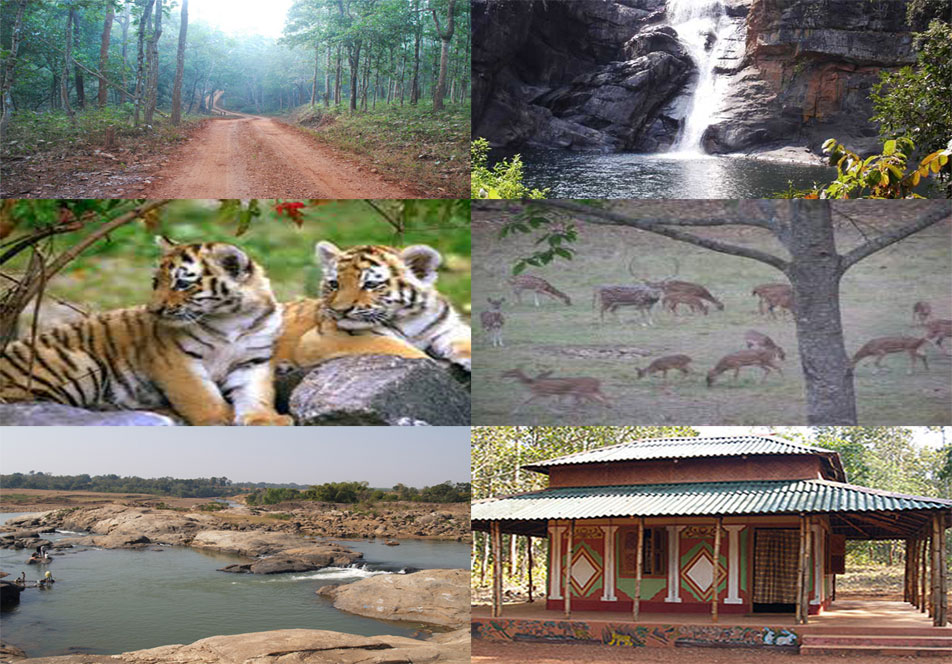

Mayurbhanj district is one of the 30 districts in Odisha state in eastern India. It is the largest district of Odisha by area.
Its headquarters are at Baripada. Other major towns are Rairangpur, Karanjia and Udala.
Mayurbhanj's geography is defined by the Simlipal National Park located in the centre of the district. Covering more than a fourth of the district's area, these forests surround the Simlipal Hills, which form the watershed for the district. The hills reach a height of 3824 feet at Meghasani towards the south and also have many other peaks above 2500 feet. The northern parts of these hills have been mined for iron ore for more than a century. The country to the east of Simlipal is an extension of the Odisha coastal plains and is drained by the Subarnarekha River and Budhabalanga River along with their tributaries. The land is almost level with a slight slope to the coast. The indigenous vegetation consisted of pure Sal forests which have now been replaced by paddy cultivation.

The Simlipal National Park, while formally a part of the four subdivisions noted above, is in practice under a Field Director belonging to the Indian Forest Service (IFS). The Deputy Director, also an IFS officer, is responsible for the day-to-day operations of the Park. Three other Divisional Forest Officers are in charge of the forests outside the National Park area.

The Judiciary is headed by a District and Sessions Judge who exercises both criminal and civil jurisdiction. He also enjoys revisionary powers over certain orders of the District Magistrate and Sub Divisional Magistrates. He is assisted on the civil side by Civil Judges of senior and junior divisions and on the criminal side by Chief Judicial Magistrate and Sub Divisional Judicial Magistrates.
The name of the district is a portmanteau of Mayura (meaning peacock in Odia) and Bhanja, the name of the ruling dynasty of the district till 1949. It is believed that the Mayura was the name of another dynasty that merged with the Bhanjas sometime around the 14th century. The peacock motif was later adopted by the Bhanjas and featured on the Mayurbhanj coat of arms. Alternative spellings were used by the early British sources and the district appears as Mohurbunge and Morbhanj in many records.